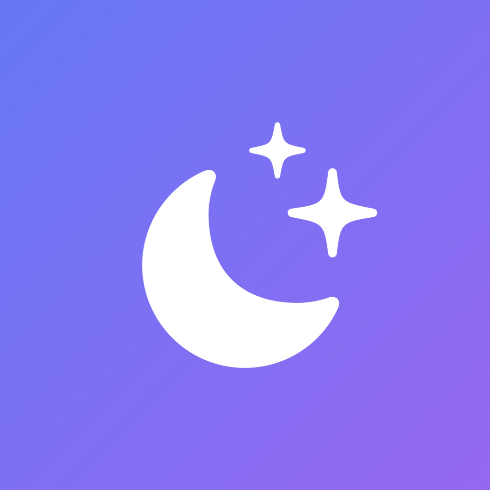
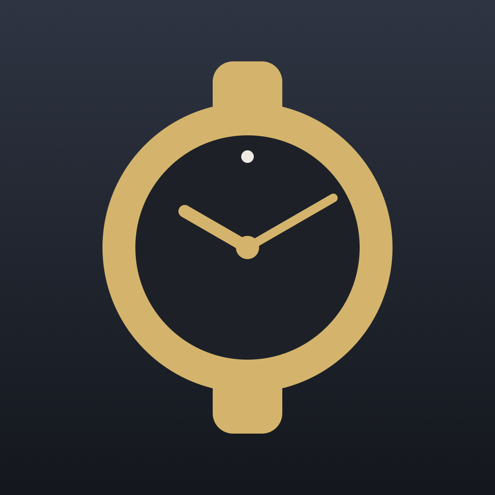
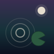

Jimmy Rentmeester
Lead Product Manager at Coolblue · Tilburg
I run e-commerce for two categories at Coolblue. Outside that I build and release iOS apps, which is where I get to do the whole product job myself. That part is what this page is mostly about.
Apps
GRID_BREAKER
A one-thumb reflex game. Decode the grid before it disappears, chain hits, chase a score.
Sixteen campaign levels, each one introducing a single mechanic. The game explains itself while you play it, so it opens without a tutorial.

BabyBeam
Turns two iPhones into a video baby monitor. Sound and picture go straight from one device to the other, encrypted, and nothing is stored.
Every competing app routes the stream through a cloud account. Keeping it device to device meant giving up watching from outside the house. I decided that trade-off was the point of the app.

WristVault
Catalogues a watch collection, logs what you wear, and exports an insurance PDF. The data stays on the phone.
One payment instead of a subscription, in a category that has been moving the other way. The free version holds three watches and still exports, so the paid unlock has to be worth buying on its own.

Stillwater
A pond in a browser tab. Skip stones across it, ring the lilypads, watch the koi.
No score, no install, no roadmap. Somewhere to work on timing and weight without a store attached to it.
About
My title at Coolblue is Lead Product Manager, but the job is closer to e-commerce than to product ownership as most companies use the word. I carry the commercial result for the Gaming and Office categories and I am responsible for a customer journey that stays ahead of the competition, with a team of nine specialists.
The product side is the part I like most, and the apps are where I get all of it: deciding what version one contains, what it costs, what gets left out. Moving into a product owner role is the direction I want to take next.
-
Lead Product Manager
Commercial results and customer journey for Gaming and Office. I turn targets into quarterly plans, run two-week sprints with the team, and coach nine specialists on making decisions from customer and sales data.
-
Product Manager, Gaming
Responsible for the commercial result in Gaming, including how to sell the PlayStation 5 fairly while almost nobody could get one. The first launch was chaotic, so I turned it into a process that development, the app team and marketing could all follow. Later stock drops ran with far less customer contact and a better NPS.
-
SEO Specialist
Technical and content SEO for client websites. I worked from traffic and ranking data to decide what was worth fixing first, then checked whether it actually moved.
-
Online Marketer, Product Support, Product Editor
Three roles in three years, from writing product content to owning parts of the customer journey: SEO and CRO for Gaming and IT accessories, and reading NPS, returns and customer feedback to find what needed changing.
-
Software Research & Concept Development
Bluetooth beacon concepts for GLOW and VisitBrabant, and research into how people use mobile apps in public spaces.
Studied Communication & Media at Fontys Academy for the Creative Economy (2012–2016), specialising in trendwatching and futures research, after ICT Media & Design and a network engineering diploma.